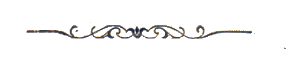

|
(Cispa) 6/19 - detto anche Briscola - Nato a Giuncarico (GR) il 27 gennaio 1887 Morto a Grosseto il 4 settembre 1970 Padre di Cittino I (Vieri Luschi) e di Ciaba (Mario Luschi)
1 Palio straordinario a sorpresa. - Dopo Trecciolino, detiene il record di vittorie (3) con lo stesso cavallo: Fanfara (2/7/1922 Valdimontone, 16/8/1922 Bruco, 2/7/1924 Nicchio) (cfr.).    la foto a destra è del 1926 quando indossava il giubbetto della Chiocciola 
Nel giugno 1914 arrivò a Siena, da Giuncarico, un ventisettenne che nelle batterie della tratta si mise in evidenza su due cavalli mediocri, uno dei quali pare fosse addirittura cieco da un occhio, il suo nome era Ottorino Luschi e la Tartuca lo fece subito debuttare col soprannome di Cispa. Ad agosto la Tartuca dirottò il maremmano nella Lupa che, partito primo, si soffermò a nerbare Picino nell'Oca favorendo il tal modo la vittoria di Bubbolo per i colori di Castelvecchio. Trascorsi i dolorosi anni della grande guerra Cispa fu il protagonista inatteso della coinvolgente e movimentata carriera del 2 luglio 1919. Quel Palio vedeva favoriti assoluti i due campioni della piazza: Picino nella Chiocciola e Nappa nell'Aquila, tra i due esistevano dei forti dissidi, pare per questioni di donne ed alla vigilia del Palio, durante un furioso alterco, si erano promessi di danneggiarsi reciprocamente. Partiti nettamente in testa, infatti, i due rivali si ostacolarono duramente al primo Casato coinvolgendo nel capitombolo anche Randellone nella Torre che, avvisato prima del possibile colpo di scena, non fu lesto ad evitare quel groviglio di uomini e cavalli. Si aprì, in questo modo, il cosiddetto "Palio delle brenne": per un breve tratto passò prima la Selva, poi la Lupa ed infine, al terzo giro, il Leocorno che ebbe la meglio sulla Tartuca lasciando a bocca asciutta chi sperava in lauti guadagni dopo gli anni di magra della guerra. Nelle altre due carriere del 1919 Cispa deluse decisamente le aspettative pur montando i cavalli che avevano vinto il Palio immediatamente precedente, Giacca e Stellina. La crisi sembrò accentuarsi nel luglio 1920 quando nell'Istrice, cadendo dopo una forsennata rimonta, Cispa, come un consumato circense, riuscì a risalire a cavallo tra gli applausi di tutta la piazza. Anche le successive prestazioni furono assai deludenti e nulla lasciava presagire che Cispa, chiamato anche Briscola, sarebbe diventato il vero mattatore di quegli anni contrastando in ogni modo il blasonato e potentissimo Picino. La svolta coincise con l'arrivo in piazza di una baia oscura di Oreste Fiaschi, passata alla storia col nome di Fanfara, che nel luglio 1922 debuttò per il Valdimontone. Cispa arrivò nei Servi sostituendo il mediocre Rombois e vinse nettamente sfruttando un'ottima partenza e le tante nerbate inferte da Randellone a Picino. Nel Palio seguente il Bruco riformò l'accoppiata vincente di luglio, stavolta la vittoria fu meno netta a causa di una partenza non molto brillante con Cispa che riuscì a passare Picino, con Crognolo nella Chiocciola, solo all'ultimo passaggio davanti al Palco della Comparse. Leggenda narra che subito dopo l'arrivo vittorioso Cispa fu colpito da un brucaiolo inferocito il quale gli rimproverò di aver vinto in modo troppo sofferto con un cavallo nettamente superiore agli altri! La prestigiosa accoppiata Cispa-Fanfara fu protagonista, per la terza volta di fila, anche nel luglio 1923 quando difesero i colori della Civetta, contrada nonna dell'epoca l'unica a secco di successi nel nuovo secolo. In quel Palio la Chiocciola investì una somma notevole che evidentemente faceva gola a Cispa che da favorito assoluto si rese protagonista di una carriera decisamente incolore, dopo una partenza incerta la Civetta girò prima a San Martino ma perse subito l'azione per cercare di favorire la Chiocciola che, nel frattempo, era rimasta attardata dopo uno scambio di nerbate con la Lupa. Proprio la Contrada di Vallerozzi si lanciò all'inseguimento della Civetta ed al terzo Casato, tra lo stupore generale, Pirulino e la sconosciuta Baietta concretizzarono un inatteso e spettacolare sorpasso. Cispa, incapace di reagire nel momento decisivo, fu salvato dalle giustificate rimostranze civettine solo dall'intervento di un folto gruppo di brucaioli. L'anno successivo, dopo un turno di assenza, Fanfara toccò al Nicchio che si affidò subito a Cispa il quale, motivato a dovere e minacciato pubblicamente, cancellò la figuraccia precedente restando in testa dalla mossa al terzo bandierino mai impensierito dai tentativi della Tartuca e dell'Oca. Finita l'era di Fanfara il fantino maremmano strinse un legame molto forte con la Chiocciola guidata all'epoca dal munifico Marchese Leone de Groleè Virville, senese purosangue a dispetto del cognome. Nell'agosto 1925 in San Marco arrivò lo scattante Fiorello e Cispa sfruttò alla grande le doti di questo barbero partendo davanti alla favorita Onda, con Randellone su Lola, conquistando in tal modo la quinta vittoria in sole quattordici presenze. Sempre più legato alla Chiocciola l'anno seguente Cispa fu chiamato a montare la promettente Margiacchina che in luglio era toccato alla Tartuca a cui il destino aveva stavolta affidato il veloce Fiorello. Per la Chiocciola, viste le recenti vittorie, si prospettava un Palio di ostacolo verso la rivale non a caso Cispa si accordò con Picino favorendo la partenza fulminea dell'Oca. Al primo Casato, però, l'esperto fantino ocaiolo cadde ed in testa passò la Tartuca, a quel punto Cispa fu costretto a spingere al massimo Margiacchina affiancando Porcino all'inizio del terzo giro. Il breve ma intenso scambio di nerbate favorì la vittoria di Cispa, un vero trionfo per San Marco il terzo di fila nel Palio dell'Assunta. Impazzito di gioia il Marchese De Groleè ricompensò Cispa con un terreno ed una casa e l'ammontare dei partiti raggiunse l'esorbitante cifra di 118.000 lire! Ormai giunto alla sesta vittoria Cispa ritrovò, per altre tre volte consecutive, l'adorata Margiacchina non riuscendo però più a ripetersi. L'epilogo prematuro e decisamente inglorioso della luminosa carriera di Ottorino Luschi, paragonabile non solo per i numeri a quella del grande Vittorino, è datata 2 luglio 1928. In quell'occasione l'Oca, decisa a vincere ad ogni costo, riuscì a mettere Cispa ed altri fantini al completo servizio di Picino. Tra i canapi il fantino maremmano ostacolò in modo deciso Titino nella Torre mentre Randellone, nel Leocorno, trattenne per le redini Fiorello nella Civetta, l'Oca con tanto spazio a disposizione ebbe ovviamente vita facile. Il rientro in contrada di Cispa non fu dei migliori ed il fantino fu schiaffeggiato prima da alcuni chiocciolini e poi dall'orgoglioso Marchese De Groleè che per la sua contrada aveva dilapidato gran parte del suo ingente patrimonio. La successiva squalifica di due Palii mise di fatto fine alla carriera di Cispa che l'anno dopo favorì l'avvento in piazza del figlio diciottenne Vieri detto "Cittino", il quale vinse per l'Aquila nel luglio 1931 restando in piazza sino al 1939. Meno lunga e soddisfacente fu l'esperienza paliesca dell'ultimo discendente della dinastia dei Luschi da Giuncarico: il quarantenne Mario detto "Ciaba" che nel luglio 1949 corse un'anonima carriera nel Drago su Anita.   giubbetto con il quale vinse il Palio del 1922 nel Bruco e istantanea a ricordo della stessa vittoria |